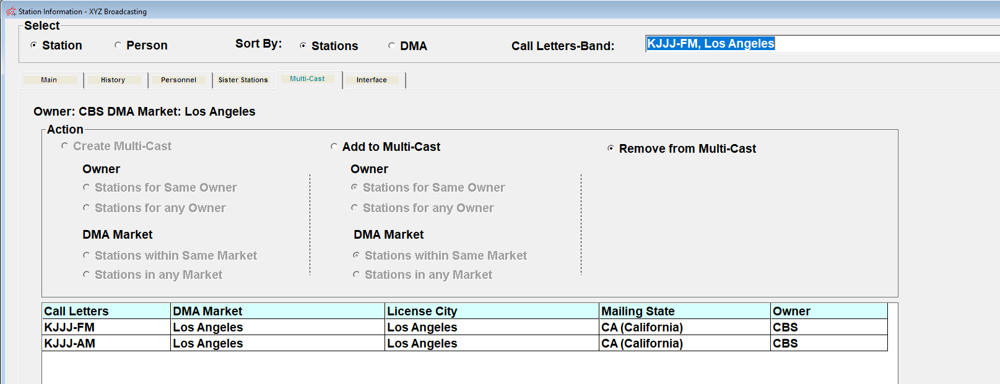

Multicast
If there are two or more stations that have one or more vehicles that both stations are affiliated with and that air the same feed at the same time, you can indicate their connection by using the Multicast Tab. (The difference between Sister and Multicast stations is that Multicast stations air the identical programming feed at the same time, while Sister stations can air completely different programming, and are connected by their ownership and location.)

Multicast stations generally share the same Owner, and typically (but not always) are in the same Market. Note: when creating regions for split copy buys on the Traffic system, each multicast station must be included in the region, not just the primary station.
Setting up multicast stations is a two part process. The first part involves grouping the stations together on the Multicast tab on the Stations screen. The second part involves creating multicast agreements for the individual vehicles that the stations carry simultaneously. For information on creating agreements, please see the Affiliate Agreements help document that is available on the Counterpoint website.
When a station is selected that is part of a multicast group, the word “Multicast” shown on the Multicast tab will be in light green text.
Creating Multicast Groups
To create a Multicast group for existing stations:
- Select one of the stations from the station dropdown on the Main tab and then click the Multicast tab.
- Click the “Create Multicast” radio button. By default, the system shows stations with the same owner and within the same market, but multicast groups can also be created for stations with different owners by selecting the “Stations for any Owner” radio button, or stations in different markets by selecting the “Stations in any Market” radio button.
- Click once on any station that you wish to make part of this multicast group, then press Save.
Adding a Station to an existing Multicast Station Group
To add a new station to an existing Multicast station group:
- Select the new station and press the Multicast tab.
- Click the Add to Multicast radio button, and a list of existing Multicast groups will appear, populated by default with a list of stations for the same owner and within the same market. To expand the list of available stations, the "Stations for any Owner" radio button will include stations for any owner, and the "Stations in any market" radio button will include stations in any market. Note that depending on the number of stations in the system, it may take time for the full list of stations to populate when the any owner/any market options are selected.
- Click the multicast group that you want to add this new station to, then press Save.
Alternatively, you can select one of the stations in the existing multicast group, press “Add to Multicast”, select the new station, then press Save.
Removing a Station from a Multicast Group
If you made a station part of a Multicast group by mistake, or a station should no longer be part of a multicast group so that it needs to be removed from the group:
- Select one of the stations in the group and press the multicast tab.
- Click the “Remove from Multicast” radio button.
- Select the station to remove, then press Save to remove it from the group.